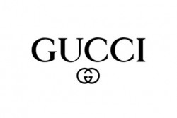

Guči (ital. Gucci) je italijanski modni brend, deo Guči Grupe, multinacionalne francuske kompanije, u vlasništvu Kering kompanije, ranije poznate kao PPR. Guči je osnovao Gučio Guči u Firenci 1921. godine. Prema BusinessWeek magazinu, Guči je u 2008. godini zaradio oko 4,2 milijardi evra, i time se popeo na 41. mesto na listi ’’Top 100 svetskih brendova” za 2009. godinu. Tu listu jednom godišnje sastavlja sam časopis u saradnji sa Interbrand-om. Guči je, takođe, i najprodavaniji italijanski brend, poslujući sa oko 278 svojih prodavnica širom sveta (podaci iz septembra 2009. godine), kao i veleprodajom po drugim prodavnicama i robnim kućama. Godine 2013, ovaj brend je vrednovan na 12,1 milijardi američkih dolara, sa prodajom od 4,7 milijardi. Iste godine se Guči našao na 38. mestu na Forbsovoj listi najvrednijih brendova. Na devedesetogodišnjicu od otvaranja, 2011. godine, otvoren je Guči muzej u Firenci.[1] Do danas Guči je postao jedan od najpoznatijih, najprestižnijih i najprepoznatljivijih modnih brendova na svetu.
Dom Guči, ili jednostavno poznatiji kao Guči, je nastao 1921. godine. Otvorio ga je Gučio Guči (1881 – 1953) u svojoj rodnoj Firenci i to kao malo preduzeće i prodavnicu kožne galanterije. Inspiraciju za otvaranje preduzeća ove vrste je dobio u Londonu dok je radio za luksuzni hotel Savoj. Videvši prefinjenu eleganciju engleske aristokratije, postavio je sebi cilj da to prenese i u Italiju. Kao motiv je pronalazio iskusne toskanske zanatlije.[2] Sledećih par godina, Guči opstaje, proširuje se i najviše se orijentiše na proizvodnju torbi, kovčega, rukavica, obuće i kaiševa, sve od kože. Godine 1938, Guči se proširio i otvorio je prvu prodavnicu u Rimu. Sam Gučio je dizajnirao mnoge značajne proizvode kompanije. Veliki deo Gučijevih kupaca su bili lokalni aristokrati koji su se bavili jahanjem konja i njihova potražnja dovela je do toga da Guči razvije jedinstvenu konjičku liniju proizvoda.[3] Suočeni sa nedostatkom stranih zalih za vreme teških godina fašističke diktature u Italiji, Guči počinje da eksperimentiše sa neuobičajenim luksuznim materijalima, poput konoplje, lana i jute. Godine 1947, Guči u svoj asortiman proizvoda uvodi Bamboo Bag - torbu koja postaje prepoznatljivi znak Gučija. Jedna od najsuptilnijih inovacija je bilo uvijanje štapa za ručku na toj torbi, koja je po svom obliku podsećala na jahačko sedlo. I danas je takva torba obavezan modni aksesoar članovima kraljevskih porodica i mnogih slavnih ličnosti.[4] Tokom 1950-ih, zaštitni i prepoznatljiv znak Gučija postaju zeleno-crveno-zelene trake na proizvodima, opet u konjičkom stilu. Otvarivši prodavnice u Milanu i Njujorku, Guči počinje da gradi svoje mesto u luksuznom svetu mode. Gučio Guči je umro 1953. godine, a njegovi sinovi Aldo, Vasko, Ugo i Rodolfo su preuzeli posao.[5] Gučijevi proizvodi su brzo postali uvekaktuelni vanvremenski dizajnirani modni detalji, nezaobilazni kod mmogih slavnih ličnosti. Guči je postao sinonim za eleganciju i prefinjenost u Džet setu. Po prvi put radi i po ličnoj porudžbini za Grejs Keli, princezu od Monaka, kreirajići svilenu maramu sa cvetnim printom. Takođe, jedna torba na rame koju je nosila Džeki Kenedi, supruga američkog predsednika Džona F. Kenedija, postala je popularna kao torba Džeki O. Nakon Gučiove smrti, njegov sin Aldo je kao jedan od rukovodioca pomogao da Guči nastavi svoju ekspanziju, otvarajući prodavnice u Londonu, Palm Biču, Parizu i na Beverli Hilsu.[6] Čak iako se kompanija širila, porodica je bila poznata po unutrašnjim sukobima. Sporovi u vezi nasledstva, akcije gazdinstva, često su bile osnove svađa ove porodice. U to vreme, sredinom šezdesetih, Guči usvaja logo koji čine dva spojena latinična slova G, kreirajući još jedan nepogrešiv Guči simbol.[6]
Početak
2. Nike
3. Versace
4. Calvin Klein
5. Podaci